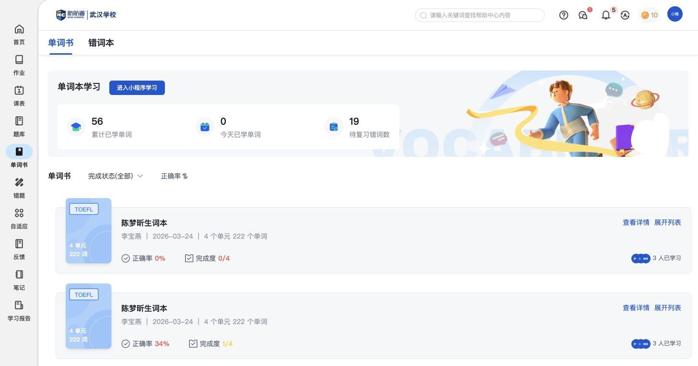
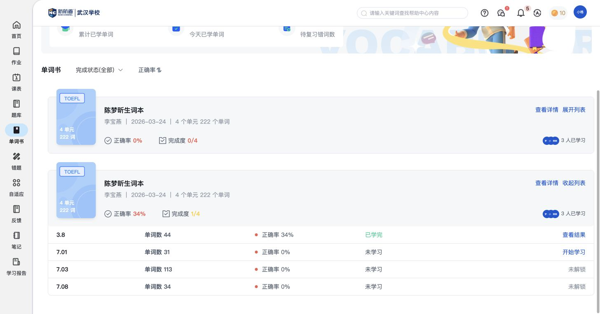
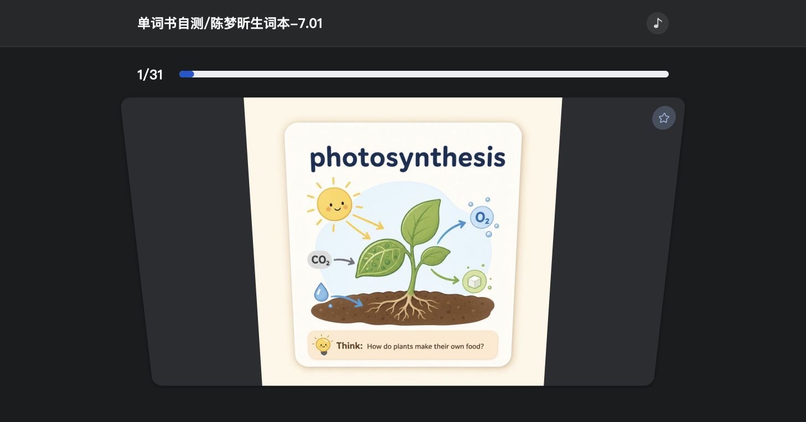
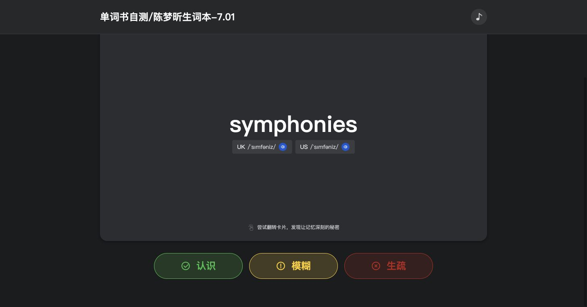
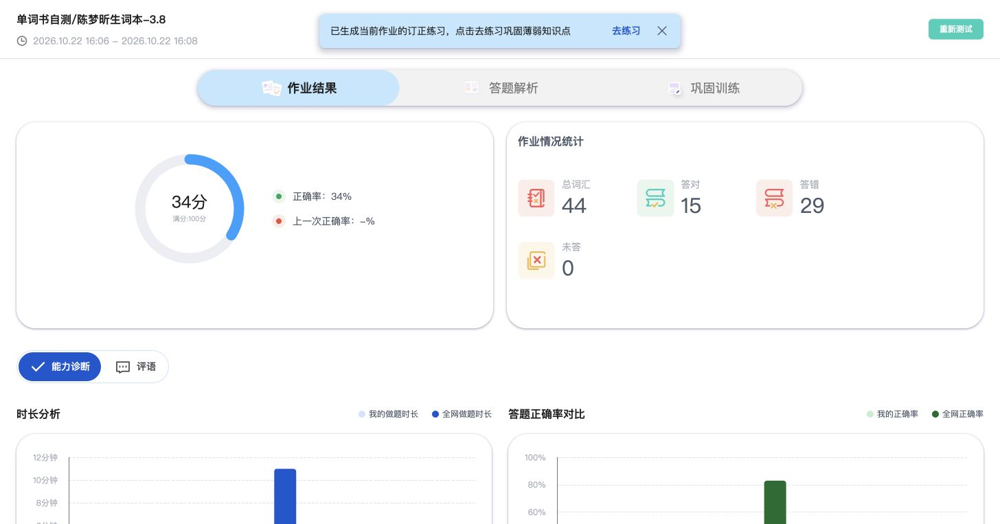
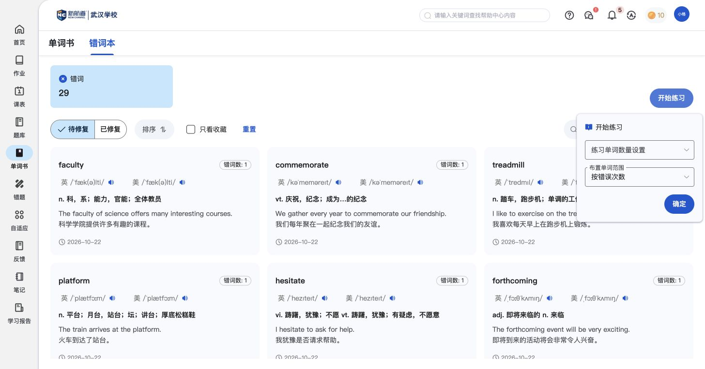
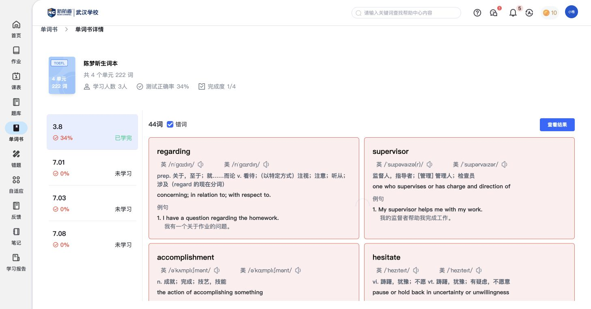
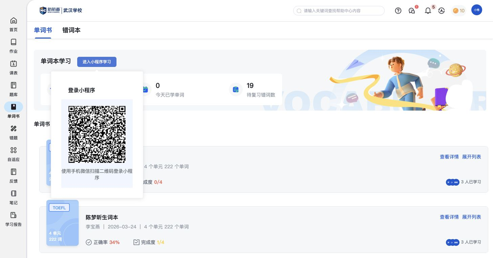

单词书：按单元学词，持续复习
单词书把一本词汇资料分成连续单元，帮助学生看进度、记单词、做单元自测，再复习错词。这里重点介绍持续学习过程；词汇作答、成绩和订正练习引用作业篇。
功能定位与页面结构
单词书
1. 查看学习进度累计已学、今日已学、待复习错词 → 单词书 → 单元完成度与解锁状态。
2. 学习当前单元词表与例句 → 逐词翻卡和记忆配图 → 认识／模糊／生疏自查。
3. 自测与复习单元自测 → 共用结果与订正；错词本 → 选择练习数量与范围。
核心功能清单
下载核心功能对比清单单词书学习进度
看清整本书和各单元学到了哪里，知道接下来可以学什么。
- 总览显示累计已学、今日已学和待复习错词数；每本书显示单元数、词数、正确率和完成度。
- 展开后按单元显示词数、正确率和学习状态：已学单元可看结果，当前可学单元可开始，后续单元显示未解锁。
- 查看详情后可按单元进入词表或查看本单元错词。


对比时可关注：是否把整本词汇资料组织成有顺序、有进度的持续学习过程。
已看到解锁状态，具体解锁条件尚待补充。
词卡学习
结合释义、例句和记忆配图学单词，再判断自己是否熟悉。
- 词表提供英美音标和发音、双语释义、例句；可遮挡释义进行自查。
- 逐词学习显示当前单词和进度；翻卡后展示与单词有关的记忆配图。
- 每个词提供“认识、模糊、生疏”三种掌握判断。判断后如何安排复习，当前依据尚不能确认。



对比时可关注：词汇学习是否包括理解、记忆和掌握自查，而不只是做选择题。
记忆配图已实际看到；图片来源和生成方式未确认。
单元自测
学完一个单元后，用测验检查掌握情况，并回看结果。
- 词表页提供“开始测试”，已学单元提供“查看结果”。
- 单元自测结果与词汇作业共用页面，可查看成绩、逐词解析、重新测试及关联订正练习。

对比时可关注：单元学习是否有配套测验，能否从测验结果继续复习。
过关标准和对后续单元解锁的影响尚待补充。
相关说明：共用 · 词汇作答与逐词回看 · 共用 · 成绩 · 共用 · 订正练习
错词复习
集中查看出错的词，选择数量和范围，再进行针对性练习。
- 错词本分“待修复、已修复”；词卡显示错误次数、日期、发音、释义和例句，保留选择与收藏入口。
- 开始练习可设置单词数量和词汇范围，现有配置默认按错误次数选词。
- 单元详情也能只看错词，方便围绕本单元复习。错词本另有导出入口。


对比时可关注：能否将错词集中为下一轮练习内容，并保留复习状态。
修复条件与状态更新规则尚未确认。
与其他模块的关联
- 单词书组织连续单元；单词作业处理单次任务。词汇测验的答题、结果和订正沿用作业篇。
- 单词书内的错词本与“错题→错词”已有相同样例。本篇完整说明错词复习，错题篇只保留入口和范围说明。
- 页面有微信小程序扫码学习入口；移动端学习及进度同步尚未记录。
待补内容
- 单元学完、自测后如何更新完成度和解锁下一单元。
- 认识／模糊／生疏是否影响复习安排；错词如何判为已修复、两处错词入口的数据范围是否始终一致。
- 微信小程序的学习内容与网页进度同步。
操作依据
保留13组截图与完整页面观察，基础操作不单列为核心功能。
辅助截图：单元错词和小程序入口


本轮产生的测试记录与状态变化
- 进入7.01单元生成／打开一条单元自测任务，查看词表和翻卡；未选择掌握判断、未测试交卷。
逐项操作记录与截图（按需查看）
- SB01 截图 · 页面观察 — 词书总览显示累计已学、今日已学、待复习错词，词书卡片含发布人、单元/词数、正确率和完成度。
- SB02 截图 · 页面观察 — 词书按单元展示词数、正确率和学习状态：已学完可看结果，下一单元可开始，后续单元未解锁。
- SB03 截图 · 页面观察 — 词书详情汇集总单元/词数、参与人数、测试正确率和完成度；按单元切换并提供错词及查看结果。
- SB04 截图 · 页面观察 — 单元词卡包含英美音标/发音、释义及双语例句，错词红色突出；勾选错词可只查看错误词汇。
- SB05 截图 · 页面观察 — 词书单元“查看结果”进入基础练习结果，显示34分/44词/15对29错，另有重新测试及已生成订正练习提示；复用作业结果组件。
- SB06 截图 · 页面观察 — 新单元先展示完整词表、英美音标、双语释义/例句，可遮挡释义并选择开始学习或开始测试。
- SB07 截图 · 页面观察 — 逐词学习显示1/31，卡面有单词与音标，翻面实际呈现与单词相关的记忆配图；先前以为释义例句的判断已依据截图纠正。
- SB08 截图 · 页面观察 — 翻卡实际显示与当前单词相关的记忆配图；下方提供认识/模糊/生疏，未验证其对后续调度算法的影响。
- SB09 截图 · 页面观察 — 词书错词本按待修复/已修复组织，词卡保留错误次数、日期、发音、释义和例句；提供选择、收藏、开始练习与导出。
- SB10 截图 · 页面观察 — 错词开始练习可设置单词数量及词汇范围，默认按错误次数；未确认下发或开始新训练。
- SB11 截图 · 页面观察 — 小程序入口弹出微信扫码登录说明与二维码，本次不使用手机扫码，移动端内容待补。
- SB12 截图 · 页面观察 — 补图：词卡正面同时显示单词/音标、翻卡提示、认识/模糊/生疏掌握判断和逐词进度。
- SB13 截图 · 页面观察 — 补图：卡片底部的认识、模糊、生疏三个掌握判断清晰可见；未点击任一判断。